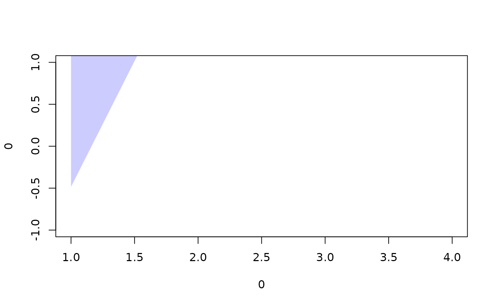
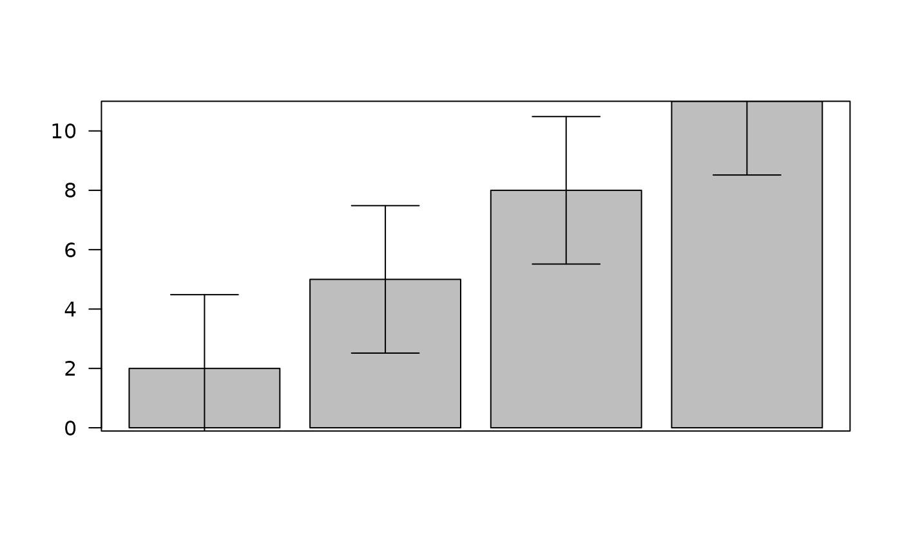

Plot column means and 95% confidence intervals
plot_cis.RdComputes the mean and a 95% confidence interval (via t.test)
for each column of a numeric matrix, then plots them either as a line-and-ribbon
plot (default) or as a barplot with error bars.
Usage
plot_cis(
d,
barflag = FALSE,
newflag = TRUE,
xvals = NULL,
rgbvec = c(0, 0, 1),
capfrac = 0.8,
...
)Arguments
- d
A numeric matrix (or object coercible to one, e.g. a data frame of numeric columns) with more than one row. Each column is treated as one group/condition/item to summarize; each row is one observation (e.g. one participant). Column names, if present, are copied to the returned summary matrix.
- barflag
Logical. If
TRUE, plot a barplot with error bars viabarplot. IfFALSE(default), plot a line for the column means with a transparent ribbon for the confidence interval.- newflag
Logical, default
TRUE. Only used whenbarflag = FALSE: whether to start a new plot (TRUE) or add the line/ribbon to the current plot (FALSE), e.g. to overlay a second condition on an existing ribbon plot. Has no effect whenbarflag = TRUE–barplotalways starts a new plot.- xvals
Numeric vector of x-axis positions for each column, or
NULL(default) to use1:ncol(d). Must have length equal toncol(d). Only used whenbarflag = FALSE– bar positions in barplot mode come frombarplotitself and do not depend onxvals.- rgbvec
Numeric vector of length 3, the red/green/blue proportions (each in
[0, 1]) used for the mean line and ribbon fill. Defaultc(0, 0, 1)(blue). Only used whenbarflag = FALSE– bar colors in barplot mode followbarplot's own defaults (orcol, passed via...).- capfrac
Numeric in
(0, 1], default0.8. Only used whenbarflag = TRUE: the width of each error bar's horizontal cap (the flat top/bottom of the "I"-beam drawn byarrows), as a fraction of that bar's own width – so caps stay proportional to the bars regardless of how many bars there are or how wide the plot is. See Details for why this replaced an earlier, unit-inconsistent computation.- ...
Additional graphical parameters passed through to
barplot(whenbarflag = TRUE) or toplot(whenbarflag = FALSEandnewflag = TRUE) – e.g.col,ylim,main,xlab/ylab, or (for the barplot case)widthto change the bars' own width from the default of 1.
Value
Invisibly returns a 3-row numeric matrix with row names
"mean", "upperci", "lowerci" and one column per
column of d (column names copied from d if present).
Details
For each column, missing values (NA) are dropped before computing
the mean and confidence interval. A column with zero remaining values
returns NA for all three summary rows. A column with exactly one
remaining value, or zero variance, has no well-defined confidence interval
– "upperci"/"lowerci" are both set equal to "mean"
in that case (a zero-width interval), rather than NA, so the point
still plots even though there's nothing meaningful to say about its
uncertainty. Treat a zero-width interval in the output as "not enough data
to estimate a CI," not as genuine certainty.
Why capfrac instead of a fixed length passed to
arrows: an earlier version of this function
computed the error-bar cap width as a fraction of the data range
(bar spacing relative to the total x-axis range) and passed that number
directly as arrows(..., length = ), which graphics interprets
in inches, not as a fraction of anything data-related. Those two
quantities are unrelated units, so the resulting cap width scaled
incorrectly with the number of bars – with only a few, widely-spaced
bars, the old formula could produce caps several inches wide. This version
instead computes the desired cap width in data coordinates directly (as
capfrac of the actual bar width, using width from ...
if supplied, matching barplot's own default of 1
otherwise) and converts that to inches using the plot's actual
data-to-device scale (par("pin")/par("usr")), so the cap
stays a consistent, correctly-scaled fraction of each bar regardless of
bar count or plot size.
Examples
x <- matrix(1:12, 3, 4)
plot_cis(x)

# As a barplot, with narrower error-bar caps
plot_cis(x, barflag = TRUE, capfrac = 0.5)
